<!DOCTYPE html>
<html lang="en">
<head>
<meta charset="utf-8">
<meta name="viewport" content="width=device-width, initial-scale=1">
<title>Story Overview · ECO Archive – Emil Chronicle Online Wiki</title>
<meta name="description" content="The SAGA updates that built the world of ECO, and the Main Story chapters that tell their story.">
<link rel="canonical" href="https://eco.akexorcist.dev/story.html">
<meta property="og:type" content="article">
<meta property="og:site_name" content="ECO Archive">
<meta property="og:title" content="Story Overview">
<meta property="og:description" content="The SAGA updates that built the world of ECO, and the Main Story chapters that tell their story.">
<meta property="og:url" content="https://eco.akexorcist.dev/story.html">
<meta property="og:image" content="https://eco.akexorcist.dev/assets/saga_img/covers/saga00.jpg">
<meta property="og:image:width" content="640">
<meta property="og:image:height" content="874">
<meta property="og:image:alt" content="SAGA 0 main visual">
<meta name="twitter:card" content="summary_large_image">
<script type="application/ld+json">{"@context": "https://schema.org", "@type": "BreadcrumbList", "itemListElement": [{"@type": "ListItem", "position": 1, "name": "Home", "item": "https://eco.akexorcist.dev/"}, {"@type": "ListItem", "position": 2, "name": "Story", "item": "https://eco.akexorcist.dev/story.html"}, {"@type": "ListItem", "position": 3, "name": "Story Overview", "item": "https://eco.akexorcist.dev/story.html"}]}</script>
<script>(function(){var t=localStorage.getItem('theme');if(t)document.documentElement.setAttribute('data-theme',t)})()</script>
<link rel="stylesheet" href="site.css">
<link rel="icon" href="favicon.ico" sizes="16x16 32x32 48x48">
<link rel="icon" type="image/png" sizes="32x32" href="favicon-32.png">
<link rel="apple-touch-icon" href="apple-touch-icon.png">
</head>
<body class="article">
<svg width="0" height="0" style="position:absolute" aria-hidden="true">
<symbol id="i-menu" viewBox="0 0 24 24"><path d="M3 18h18v-2H3v2zm0-5h18v-2H3v2zm0-7v2h18V6H3z"/></symbol>
<symbol id="i-close" viewBox="0 0 24 24"><path d="M19 6.41 17.59 5 12 10.59 6.41 5 5 6.41 10.59 12 5 17.59 6.41 19 12 13.41 17.59 19 19 17.59 13.41 12z"/></symbol>
<symbol id="i-search" viewBox="0 0 24 24"><path d="M15.5 14h-.79l-.28-.27A6.47 6.47 0 0 0 16 9.5 6.5 6.5 0 1 0 9.5 16c1.61 0 3.09-.59 4.23-1.57l.27.28v.79l5 4.99L20.49 19l-4.99-5zm-6 0C7.01 14 5 11.99 5 9.5S7.01 5 9.5 5 14 7.01 14 9.5 11.99 14 9.5 14z"/></symbol>
<symbol id="i-down" viewBox="0 0 24 24"><path d="M16.59 8.59 12 13.17 7.41 8.59 6 10l6 6 6-6z"/></symbol>
<symbol id="i-left" viewBox="0 0 24 24"><path d="M15.41 7.41 14 6l-6 6 6 6 1.41-1.41L10.83 12z"/></symbol>
<symbol id="i-right" viewBox="0 0 24 24"><path d="M10 6 8.59 7.41 13.17 12l-4.58 4.59L10 18l6-6z"/></symbol>
<symbol id="i-unfold" viewBox="0 0 24 24"><path d="M12 5.83 15.17 9l1.41-1.41L12 3 7.41 7.59 8.83 9 12 5.83zm0 12.34L8.83 15l-1.41 1.41L12 21l4.59-4.59L15.17 15 12 18.17z"/></symbol>
<symbol id="i-fold" viewBox="0 0 24 24"><path d="M7.41 18.59 8.83 20 12 16.83 15.17 20l1.41-1.41L12 14l-4.59 4.59zm9.18-13.18L15.17 4 12 7.17 8.83 4 7.41 5.41 12 10l4.59-4.59z"/></symbol>
<symbol id="i-check" viewBox="0 0 24 24"><path d="M9 16.17 4.83 12l-1.42 1.41L9 19 21 7l-1.41-1.41z"/></symbol>
<symbol id="i-moon" viewBox="0 0 24 24"><path d="M12 3a9 9 0 1 0 9 9c0-.46-.04-.92-.1-1.36a5.39 5.39 0 0 1-4.4 2.26 5.4 5.4 0 0 1-3.14-9.8c-.44-.06-.9-.1-1.36-.1z"/></symbol>
<symbol id="i-sun" viewBox="0 0 24 24"><path d="M12 7a5 5 0 1 0 0 10 5 5 0 0 0 0-10zM2 13h2a1 1 0 0 0 0-2H2a1 1 0 0 0 0 2zm18 0h2a1 1 0 0 0 0-2h-2a1 1 0 0 0 0 2zM11 2v2a1 1 0 0 0 2 0V2a1 1 0 0 0-2 0zm0 18v2a1 1 0 0 0 2 0v-2a1 1 0 0 0-2 0zM5.99 4.58a1 1 0 0 0-1.41 1.41l1.06 1.06a1 1 0 0 0 1.41-1.41L5.99 4.58zm12.37 12.37a1 1 0 0 0-1.41 1.41l1.06 1.06a1 1 0 0 0 1.41-1.41l-1.06-1.06zm1.06-10.96a1 1 0 0 0-1.41-1.41l-1.06 1.06a1 1 0 0 0 1.41 1.41l1.06-1.06zM7.05 18.36a1 1 0 0 0-1.41-1.41l-1.06 1.06a1 1 0 0 0 1.41 1.41l1.06-1.06z"/></symbol>
<symbol id="i-auto" viewBox="0 0 24 24"><path d="M12 22a10 10 0 1 0 0-20 10 10 0 0 0 0 20zm1-17.93a8 8 0 0 1 0 15.86V4.07z"/></symbol>
</svg>
<a class="skip" href="#main">Skip to content</a>
<header class="topbar">
  <button class="iconbtn" id="menubtn" aria-label="Open navigation" aria-controls="drawer" aria-expanded="false"><svg class="i"><use href="#i-menu"/></svg></button>
  <a class="brand" href="index.html"><span class="name">ECO Archive</span></a>
  <div class="search" role="search">
    <label for="q"><svg class="i"><use href="#i-search"/></svg><span class="visually-hidden">Search pages</span></label>
    <input id="q" type="search" placeholder="Search jobs, quests, items…" autocomplete="off" role="combobox" aria-expanded="false" aria-controls="results" aria-autocomplete="list">
    <ul class="results" id="results" role="listbox" aria-label="Search results" hidden></ul>
  </div>
  <div class="thememenu">
    <button class="iconbtn" id="themebtn" aria-haspopup="menu" aria-expanded="false" aria-controls="thememenu" aria-label="Theme"><svg class="i"><use href="#i-auto"/></svg></button>
    <div class="menu" id="thememenu" role="menu" aria-label="Theme" hidden>
      <button role="menuitemradio" data-mode="system" aria-checked="true"><svg class="i"><use href="#i-auto"/></svg>System<svg class="i check"><use href="#i-check"/></svg></button>
      <button role="menuitemradio" data-mode="light" aria-checked="false"><svg class="i"><use href="#i-sun"/></svg>Light<svg class="i check"><use href="#i-check"/></svg></button>
      <button role="menuitemradio" data-mode="dark" aria-checked="false"><svg class="i"><use href="#i-moon"/></svg>Dark<svg class="i check"><use href="#i-check"/></svg></button>
    </div>
  </div>
</header>
<div class="scrim" id="scrim" hidden></div>
<div class="frame">
  <nav class="drawer" id="drawer" aria-label="Site">
    <div class="head"><span>ECO Archive</span><button class="iconbtn" aria-label="Close navigation"><svg class="i"><use href="#i-close"/></svg></button></div>
    <ul><li><a href="index.html">Home</a></li><li><details open><summary>Story<svg class="i"><use href="#i-down"/></svg></summary><ul><li><a href="story.html" aria-current="page">Story Overview</a></li><li><a href="story-the-path-we-walk.html">The Path We Walk</a></li><li><a href="story-the-world-begins-to-move.html">The World Begins to Move</a></li><li><a href="story-beyond-the-truth.html">Beyond the Truth</a></li><li><a href="story-final-battle.html">Final Battle</a></li><li><a href="story-saga14.html">Gate of Emerald Forest</a></li><li><a href="story-saga15.html">Everlasting Union</a></li><li><a href="story-saga16.html">Memories of the Ice Queen</a></li><li><a href="story-saga18.html">Carmine Brick</a></li></ul></details></li><li><details><summary>Getting started<svg class="i"><use href="#i-down"/></svg></summary><ul><li><a href="game-basics.html">Game Basics</a></li><li><a href="races.html">Races</a></li><li><a href="stat-points.html">Status Points</a></li><li><a href="city-passes.html">City Passes</a></li><li><a href="enigma-pass.html">Enigma Group Pass</a></li></ul></details></li><li><details><summary>Game systems<svg class="i"><use href="#i-down"/></svg></summary><ul><li><a href="automata.html">Automata</a></li><li><a href="bosses.html">Bosses</a></li><li><a href="catties.html">Catties</a></li><li><a href="demic-chips.html">DEMIC Chips</a></li><li><a href="dragon-mount.html">Dragon Mount</a></li><li><a href="dual-job.html">Dual Job</a></li><li><a href="dungeons.html">Dungeons</a></li><li><a href="element-fairies.html">Element Fairies</a></li><li><a href="equipment-upgrades.html">Equipment Upgrades</a></li><li><a href="fame.html">Fame</a></li><li><a href="farming.html">Farming</a></li><li><a href="fishing.html">Fishing</a></li><li><a href="flying-garden.html">Flying Garden</a></li><li><a href="flying-garden-parts.html">Flying Garden Parts</a></li><li><a href="furniture.html">Furniture</a></li><li><a href="hair-dye.html">Hair Dye</a></li><li><a href="hairstyles.html">Hairstyles</a></li><li><a href="getting-pets.html">How to Get Pets</a></li><li><a href="iris-cards.html">Iris Cards</a></li><li><a href="ability-vectors.html">Iris Cards – Ability Vectors</a></li><li><a href="item-repair.html">Item Repair</a></li><li><a href="job-switching.html">Job Switching</a></li><li><a href="marionettes.html">Marionettes &amp; Golems</a></li><li><a href="medal-machines.html">Medal Machines</a></li><li><a href="partners.html">Partners</a></li><li><a href="pet-raising.html">Pet Raising</a></li><li><a href="possession.html">Possession</a></li><li><a href="ring.html">Ring</a></li><li><a href="shops.html">Shops &amp; Merchants</a></li><li><a href="stamps.html">Stamps</a></li><li><a href="tiny-island.html">Tiny Island</a></li></ul></details></li><li><details><summary>Jobs<svg class="i"><use href="#i-down"/></svg></summary><ul><li><a href="jobs.html">All jobs</a></li><li><details><summary>Fighter<svg class="i"><use href="#i-down"/></svg></summary><ul><li><a href="job-scout.html">Scout</a></li><li><a href="job-assassin.html">Assassin</a></li><li><a href="job-commando.html">Commando</a></li><li><a href="job-eraser.html">Eraser</a></li><li><a href="job-swordsman.html">Swordsman</a></li><li><a href="job-blade-master.html">Blade Master</a></li><li><a href="job-bounty-hunter.html">Bounty Hunter</a></li><li><a href="job-gladiator.html">Gladiator</a></li><li><a href="job-fencer.html">Fencer</a></li><li><a href="job-knight.html">Knight</a></li><li><a href="job-dark-stalker.html">Dark Stalker</a></li><li><a href="job-guardian.html">Guardian</a></li><li><a href="job-archer.html">Archer</a></li><li><a href="job-striker.html">Striker</a></li><li><a href="job-gunner.html">Gunner</a></li><li><a href="job-hawkeye.html">Hawkeye</a></li></ul></details></li><li><details><summary>Spell User<svg class="i"><use href="#i-down"/></svg></summary><ul><li><a href="job-warlock.html">Warlock</a></li><li><a href="job-cabalist.html">Cabalist</a></li><li><a href="job-necromancer.html">Necromancer</a></li><li><a href="job-soultaker.html">Soul Taker</a></li><li><a href="job-vates.html">Vates</a></li><li><a href="job-druid.html">Druid</a></li><li><a href="job-bard.html">Bard</a></li><li><a href="job-cardinal.html">Cardinal</a></li><li><a href="job-shaman.html">Shaman</a></li><li><a href="job-elementalist.html">Elementalist</a></li><li><a href="job-enchanter.html">Enchanter</a></li><li><a href="job-astralist.html">Astralist</a></li><li><a href="job-wizard.html">Wizard</a></li><li><a href="job-sorcerer.html">Sorcerer</a></li><li><a href="job-sage.html">Sage</a></li><li><a href="job-force-master.html">Force Master</a></li></ul></details></li><li><details><summary>Backpacker<svg class="i"><use href="#i-down"/></svg></summary><ul><li><a href="job-farmer.html">Farmer</a></li><li><a href="job-alchemist.html">Alchemist</a></li><li><a href="job-marionettist.html">Marionettist</a></li><li><a href="job-harvester.html">Harvester</a></li><li><a href="job-miner.html">Miner (Tatarabe)</a></li><li><a href="job-blacksmith.html">Blacksmith</a></li><li><a href="job-engineer.html">Engineer (Machinery)</a></li><li><a href="job-maestro.html">Maestro</a></li><li><a href="job-ranger.html">Ranger</a></li><li><a href="job-explorer.html">Explorer</a></li><li><a href="job-treasure-hunter.html">Treasure Hunter</a></li><li><a href="job-strider.html">Strider</a></li><li><a href="job-merchant.html">Merchant</a></li><li><a href="job-trader.html">Trader</a></li><li><a href="job-gambler.html">Gambler</a></li><li><a href="job-royal-dealer.html">Royal Dealer</a></li></ul></details></li><li><details><summary>Other jobs<svg class="i"><use href="#i-down"/></svg></summary><ul><li><a href="job-breeder.html">Breeder</a></li><li><a href="job-gardener.html">Gardener</a></li><li><a href="job-joker.html">Joker</a></li><li><a href="job-novice.html">Novice</a></li></ul></details></li></ul></details></li><li><details><summary>Quests<svg class="i"><use href="#i-down"/></svg></summary><ul><li><a href="quest-catty-ai.html">Catty (Ai) Quest</a></li><li><a href="quest-catty-akane.html">Catty (Akane) Quest</a></li><li><a href="quest-catty-anzu.html">Catty (Anzu) Quest</a></li><li><a href="quest-catty-kurumi.html">Catty (Kurumi Wakana) Quest</a></li><li><a href="quest-catty-momo.html">Catty (Momo) Quest</a></li><li><a href="quest-catty-sora.html">Catty (Sora) Quest</a></li><li><a href="quest-catty-sumire.html">Catty (Sumire) Quest</a></li><li><a href="quest-catty-yamabuki.html">Catty (Yamabuki) Quest</a></li><li><a href="quest-cleaning.html">Cleaning Quests</a></li><li><a href="quest-endless-corridor.html">Endless Corridor Quests</a></li><li><a href="free-skill-points.html">Free Skill Points</a></li><li><a href="quest-heart-of-the-machine.html">Heart of the Machine</a></li><li><a href="quest-lv35-armor.html">Lv 35 Armor Quest</a></li><li><a href="quest-lv45-armor.html">Lv 45 Armor Quest</a></li><li><a href="quest-lv55-armor.html">Lv 55 Armor Quest</a></li><li><a href="quest-lv55-hat-shoes.html">Lv 55 Backpacker Hat &amp; Shoes Quest</a></li><li><a href="quest-lv60-weapon.html">Lv 60 Weapon Quest</a></li><li><a href="quest-lv65-armor.html">Lv 65 Armor Quest</a></li><li><a href="quest-lv75-armor.html">Lv 75 Armor Quest</a></li><li><a href="quest-lv85-armor.html">Lv 85 Armor Quest</a></li><li><a href="quest-lv90-weapon.html">Lv 90 Weapon Quest</a></li><li><a href="quest-lv99-armor.html">Lv 99 Armor Quest</a></li><li><a href="quest-lv99-weapon.html">Lv 99 Weapon Quest</a></li><li><a href="quest-counter.html">Quest Counter</a></li><li><a href="quest-reincarnation.html">Reincarnation Quest</a></li><li><a href="quest-ride-crawler.html">Ride Crawler Quest</a></li><li><a href="quest-tutorial.html">Tutorial Quests</a></li></ul></details></li><li><details><summary>Items<svg class="i"><use href="#i-down"/></svg></summary><ul><li><a href="boxes.html">Boxes</a></li><li><a href="petals.html">Flower Petals</a></li><li><a href="food-items.html">Food and Healing Items</a></li><li><a href="upgrade-crystals.html">Upgrade Crystals</a></li><li><a href="equipment.html">Weapons &amp; Armor</a></li></ul></details></li><li><details><summary>Crafting<svg class="i"><use href="#i-down"/></svg></summary><ul><li><a href="accessory-crafting.html">Accessory Crafting</a></li><li><a href="armor-crafting.html">Armor Crafting</a></li><li><a href="chemical-preparation.html">Chemical Preparation</a></li><li><a href="cooking.html">Cooking</a></li><li><details><summary>Recipes &amp; Materials<svg class="i"><use href="#i-down"/></svg></summary><ul><li><a href="crafting.html">Craftable Items</a></li><li><a href="materials.html">Crafting Materials</a></li></ul></details></li><li><a href="fairy-scrolls.html">Fairy Scrolls</a></li><li><a href="machinery-crafting.html">Machinery Crafting</a></li><li><a href="metal-refining.html">Metal Refining</a></li><li><a href="refining.html">Refining</a></li><li><a href="tailoring.html">Tailoring</a></li><li><a href="weapon-crafting.html">Weapon Crafting</a></li><li><a href="woodcraft.html">Woodcraft</a></li></ul></details></li><li><a href="monsters.html">Monsters</a></li><li><a href="maps.html">Maps</a></li><li><details><summary>Miscellaneous<svg class="i"><use href="#i-down"/></svg></summary><ul><li><a href="misc-logo.html">Logo</a></li><li><a href="misc-videos.html">Trailer</a></li><li><details><summary>Artwork<svg class="i"><use href="#i-down"/></svg></summary><ul><li><a href="misc-catty-art.html">Catty &amp; Pet Art</a></li><li><a href="art-partners.html">Partner Art</a></li><li><a href="art-races.html">Character Art</a></li><li><a href="art-jobs.html">Job Art</a></li><li><a href="misc-monster-artwork.html">Marionette &amp; Monster Artwork</a></li><li><a href="art-seasonal.html">Seasonal Art</a></li><li><a href="art-sketches.html">Concept Sketches</a></li></ul></details></li><li><a href="misc-servers.html">Official Servers</a></li></ul></details></li><li><a href="references.html">Sources &amp; Credits</a></li></ul>
  </nav>
  <main class="content" id="main" tabindex="-1">
<nav aria-label="Breadcrumb"><ol class="crumbs"><li><a href="index.html">Home</a></li><li>Story</li></ol></nav><header class="hero plain"><div><h1>Story Overview</h1><p class="lead">The SAGA updates that built the world of ECO, and the Main Story chapters that tell their story.</p></div></header><details class="toc-inline"><summary>On this page</summary><ul><li><a href="#main-story-chapters">Main Story chapters</a></li><li><a href="#bonus-stories">Bonus stories</a></li><li><a href="#saga-timeline">SAGA timeline</a></li><li><a href="#saga-stories">SAGA stories</a></li><li><a href="#related">Related</a></li></ul></details>


<h2 id="main-story-chapters">Main Story chapters</h2>
<p>You play the chapters from the event navigator.</p>
<ol class="plainlist">
<li><a href="story-the-path-we-walk.html">The Path We Walk</a></li>
<li><a href="story-the-world-begins-to-move.html">The World Begins to Move</a></li>
<li><a href="story-beyond-the-truth.html">Beyond the Truth</a></li>
<li><a href="story-final-battle.html">Final Battle</a></li>
</ol>

<h2 id="bonus-stories">Bonus stories</h2>
<ul>
<li><a href="story-saga14.html">Gate of Emerald Forest</a> (SAGA 14)</li>
<li><a href="story-saga15.html">Everlasting Union</a> (SAGA 15)</li>
<li><a href="story-saga16.html">Memories of the Ice Queen</a> (SAGA 16)</li>
<li><a href="story-saga18.html">Carmine Brick</a> (SAGA 18)</li>
</ul>
<h2 id="saga-timeline">SAGA timeline</h2>
<p>Dates are the Japanese release.</p>
<div class="tablewrap"><table>
<thead>
<tr>
<th>SAGA</th>
<th>Title</th>
<th>Released</th>
</tr>
</thead>
<tbody>
<tr>
<td>0</td>
<td>Rumble of Acronia</td>
<td>August 2005</td>
</tr>
<tr>
<td>1</td>
<td>Northern End, Infinite Corridor</td>
<td>October 14, 2005</td>
</tr>
<tr>
<td>2</td>
<td>The One to Run in the Dawn</td>
<td>December 9, 2005</td>
</tr>
<tr>
<td>3</td>
<td>Land of Harvest and Dark Castle</td>
<td>March 24, 2006</td>
</tr>
<tr>
<td>4</td>
<td>Wind from Rising Nation</td>
<td>July 21, 2006</td>
</tr>
<tr>
<td>5</td>
<td>Island of Creation and Craft</td>
<td>December 8, 2006</td>
</tr>
<tr>
<td>6</td>
<td>Door of Neogenesis</td>
<td>July 20, 2007</td>
</tr>
<tr>
<td>7</td>
<td>Faraway to Waterlayer</td>
<td>December 7, 2007</td>
</tr>
<tr>
<td>8</td>
<td>Song for Battle Field</td>
<td>April 11, 2008</td>
</tr>
<tr>
<td>9</td>
<td>Eternal Paradise</td>
<td>December 4, 2008</td>
</tr>
<tr>
<td>-</td>
<td>Extra Update: Iris</td>
<td>May 28, 2009</td>
</tr>
<tr>
<td>10</td>
<td>Pseudo Gods and Memory of Machines</td>
<td>December 17, 2009</td>
</tr>
<tr>
<td>-</td>
<td>Welcome Update: Primula</td>
<td>March 26, 2010</td>
</tr>
<tr>
<td>11</td>
<td>Time to Rouse</td>
<td>August 19, 2010</td>
</tr>
<tr>
<td>12</td>
<td>Reviving Pulse and Guardian of Heaven</td>
<td>December 16, 2010</td>
</tr>
<tr>
<td>13</td>
<td>Lands for Groundbreaker</td>
<td><ul class="cellist stack"><li>Chapter 1: April 14, 2011</li><li>Chapter 2: May 19, 2011</li></ul></td>
</tr>
<tr>
<td>14</td>
<td>Gate of Emerald Forest</td>
<td>July 21, 2011</td>
</tr>
<tr>
<td>15</td>
<td>Everlasting Union</td>
<td>November 24, 2011</td>
</tr>
<tr>
<td>16</td>
<td>Memories of the Ice Queen</td>
<td>May 31, 2012</td>
</tr>
<tr>
<td>17</td>
<td>The Ancient Seal and the Eternal Keep</td>
<td>September 20, 2012</td>
</tr>
<tr>
<td>18</td>
<td>Rust on Mirage</td>
<td><ul class="cellist stack"><li>Chapter 1: August 22, 2013</li><li>Chapter 2: September 26, 2013</li><li>Chapter 3: November 21, 2013</li></ul></td>
</tr>
</tbody>
</table></div>
<div class="secthead"><h2 id="saga-stories">SAGA stories</h2><div class="skexpand"><button type="button" class="iconbtn" data-sagas="open" aria-label="Expand all SAGA stories" title="Expand all"><svg class="i"><use href="#i-unfold"/></svg></button><button type="button" class="iconbtn" data-sagas="close" aria-label="Collapse all SAGA stories" title="Collapse all"><svg class="i"><use href="#i-fold"/></svg></button></div></div>
<div class="sagacards">
<details class="sagacard" id="saga-0"><summary><h3 id="saga-0-rumble-of-acronia">SAGA 0: Rumble of Acronia</h3></summary><div class="sagamedia cover"><figure class="art">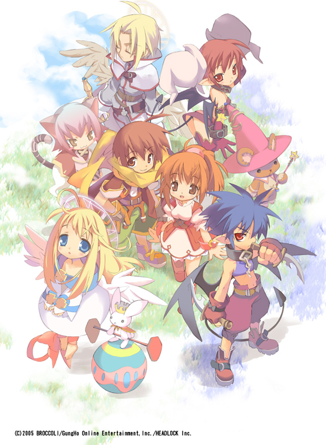</figure><div class="sagabanners"><figure class="art">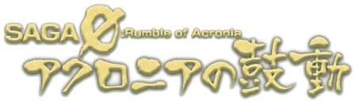</figure></div></div><div class="sagatext"><p>Following the collapse of an ancient, advanced civilization, the continent of Acronia is slowly regaining its vitality after the passage of many years.</p><p>Today, distinct races known as the Emil, Titania, and Dominion coexist within this world. Only those who accumulate experience and earn trust as adventurers are permitted to take on a profession and journey forth into even vaster lands.</p><p>It is said that in the distant past, only the Emil existed in this world, while the Titania and Dominion each lived in separate realms of their own. Why, then, did they come to live together on this continent of Acronia?</p><p>The "growth" and "departure" of adventurers...</p><p>The "dawn" and "blossoming" of a new era...</p><p>Now, their heartbeats resonate as one with the heartbeat of Acronia.</p><details class="sagajp"><summary>Original Japanese</summary><p lang="ja">いにしえの高度文明は崩壊し、<br>長い年月のもと再び活気を取り戻しつつあるアクロニア大陸。<br>現在、この世界には<br>エミル、タイタニア、ドミニオンと呼ばれる<br>異なる種族が共存しています。<br>経験を積み、冒険者としての信頼を得たものだけが、<br>職業に就くことを許され、<br>より広大な土地へと旅立っていきます。<br>かつて、この世界にはエミルしか存在せず、<br>タイタニアとドミニオンは、<br>それぞれ別の世界に暮らしていたといわれています。<br>彼らは、なぜこのアクロニア大陸で<br>共に生きていくことになったのでしょうか。<br>冒険者たちの“成長”と“旅立ち”---<br>新しき時代の“黎明”と“開花”---<br>いま、彼らの鼓動とアクロニアの鼓動が共鳴します。</p></details></div></details>
<details class="sagacard" id="saga-1"><summary><h3 id="saga-1-northern-end-infinite-corridor">SAGA 1: Northern End, Infinite Corridor</h3></summary><div class="sagamedia"><figure class="art">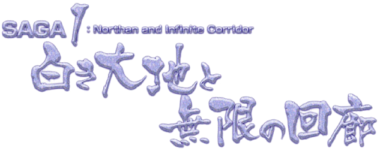</figure></div><div class="sagatext"><p>Located in the far north of the continent of Acronia lies Northern, an island of glaciers.</p><p>Known throughout the world as a kingdom of magic, it is said that Queen Beldegard's reign has lasted for several hundred years. However, because the Queen only ever appears as an illusion, it is not even certain whether she is truly alive. What mysteries could possibly be hidden in this land that worships magic and illusions?</p><p>Then, there is the existence of the "Endless Corridor," which suddenly appeared before the adventurers. What kind of end awaits within these ruins, whose depths no one has ever peered into until now?</p><p>Meanwhile, the "Coliseum," constructed and enshrined deep beneath Acropolis City, remains silent even now, gazing out at something unseen.</p><p>When all these mysteries are unraveled, adventurers will come to know a brand-new world.</p><details class="sagajp"><summary>Original Japanese</summary><p lang="ja">アクロニア大陸の極北に位置する氷河の島ノーザン。<br>魔法王国として世に知られており、女王ヴェルデガルドの統治が数百年続いていると言われていますが、女王は幻像でしか姿を現すことが無いため、本当に生きているのかさえ定かではありません。<br>魔法と幻像を崇拝するこの地に、果たしてどのような謎が秘められているのでしょうか。<br>そして、冒険者の前に忽然と姿を現した「無限回廊」の存在。<br>これまで誰もその深遠をのぞくことがなかった遺跡にはいったいどのような結末が待っているのでしょうか。<br>一方、アクロポリスシティー地下深くに造られ鎮座する「闘技場」は、いまもなお沈黙したまま、何かを見据えています。<br>すべての謎が明かされるとき、冒険者は新しい世界を知ることになります。</p></details></div></details>
<details class="sagacard" id="saga-2"><summary><h3 id="saga-2-the-one-to-run-in-the-dawn">SAGA 2: The One to Run in the Dawn</h3></summary><div class="sagamedia"><figure class="art">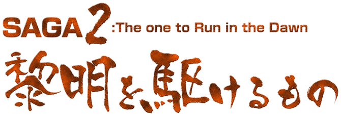</figure></div><div class="sagatext"><p>In the distant past, the continent of Acronia prospered through an advanced civilization, until a certain event brought about its collapse...</p><p>People gathered in the remaining cities, striving for restoration, yet conflicting ambitions to seize control of those cities collided, eventually erupting into conflict.</p><p>Time passed, leading to the present...</p><p>Today, the city is jointly governed by four nations. However, true harmony has yet to visit the continent, and each nation continues to exist while harboring its own hidden motives.</p><p>Amidst this situation, adventurers travel across these nations by their own will and judgment. Some find themselves drawn to a nation or its people and choose to stay, while others continue their journeys. Through those who freely roam the continent in this way, a new era is about to dawn upon a world that has barely managed to maintain its balance.</p><p>Located on an island with an active volcanic belt south of the continent of Acronia is the mining city-state of "Iron South." Backed by its abundant resources, it maintains a powerful military and reigns over the world as what is widely regarded as its strongest military nation.</p><p>"Flame" as a symbol of hope that lights the way to tomorrow.</p><p>"Flame" as a symbol of destruction that burns everything to ashes.</p><p>What will the people of Iron South, who live alongside this land of fire, bestow upon adventurers? And what will the adventurers who traverse the continent of Acronia witness there?</p><details class="sagajp"><summary>Original Japanese</summary><p lang="ja">かつてアクロニア大陸は高度な文明によって繁栄していましたがある出来事によって崩壊の時を迎えます……<br>人々は残された都市に集まり復旧を目指すも、<br>同時に都市を手に入れようとする思惑が交錯し、ついに争いが発生してしまいます。<br>時は流れ、現在……。<br>都市は、現在4つの国によって共同統治されています。<br>しかし、大陸に真の調和が訪れたわけではなく、<br>各国はそれぞれの思いを秘めたままで存在しています。<br>そんな状況のなか、冒険者達は、自らの意思と判断で国を渡り、あるものは国や人々に惹かれてとどまり、あるものは旅を続けます。<br>そうして大陸を自由に旅していく彼らによって、かろうじて均衡を保っていた世界に新たな時代が訪れようとしています。<br>アクロニア大陸南方の活火山帯を持つ島にある鉱山都市国家「アイアンサウス」。<br>その豊富な資源力を背景に強力な軍隊を維持し、世界最強と目される軍事国家として世界に君臨しています。<br>明日を灯す希望の象徴としての「炎」。<br>全てのものを焼き尽くす破壊の象徴としての「炎」。<br>炎の大地とともに生きるアイアンサウスの人々は、冒険者に何を与えるのでしょうか。<br>そしてアクロニア大陸を駆ける冒険者はそこで何を見るのでしょうか。</p></details></div></details>
<details class="sagacard" id="saga-3"><summary><h3 id="saga-3-land-of-harvest-and-dark-castle">SAGA 3: Land of Harvest and Dark Castle</h3></summary><div class="sagamedia"><figure class="art">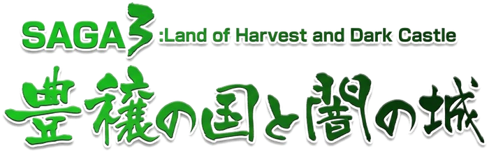</figure></div><div class="sagatext"><p>Thriving on a distant island to the east is the agricultural city-state of "Fareast."</p><p>Supported by a warm climate and fertile land, this nation has served as the world's breadbasket since even before the collapse of the ancient civilization. Thanks to its long-standing role in sustaining the world's food supply, it is the only nation that has never directly suffered the ravages of war.</p><p>...Yet, even in such a tranquil land, seeds of calamity lie dormant.</p><p>To the north of the island lies a chain of isles serving as a stronghold for outlaws who broke the pact and ventured out into the seas designated as the domain of the ancient folk. To the south towers a crumbling castle haunted by restless spirits, while within the dense, sprawling forests, unseen monsters writhe in the shadows.</p><p>An idyllic journey, and the gentle people met along the way...</p><p>A life-or-death adventure, and countless monsters that beckon death...</p><p>Now, the path to Fareast has opened.</p><p>A land that weaves "life," and a castle brimming with "death"...</p><p>In this nation where two opposing forces exist, what will adventurers come to find?</p><details class="sagajp"><summary>Original Japanese</summary><p lang="ja">東へ遥かな島に栄える農業都市国家「ファーイースト」。<br>温暖な気候と豊かな大地に支えられたこの国は、過去の文明が崩壊を迎えるそれ以前から、世界の食料庫としての役割を果たしてきました。<br>古くから世界の食糧事情を担ってきたことが幸いし、直接戦禍を被ったことのない唯一の国<br>……しかし、そんなのどかな国にも災いの種は眠っています。<br>島の北部には協約に背き、古き民の領域と定められた海へと<br>飛び出したならず者たちが根城とする島々がならび、<br>南部には死霊たちがたむろする朽ちた城がそびえ、<br>鬱蒼と広がる森にはまだ見ぬモンスターたちが蠢いています。<br>牧歌的な旅路、行く先で出会う穏やかな人々……<br>命がけの冒険、死を呼ぶ多くのモンスター……<br>今、ファーイーストへの道が開かれました。<br>「生命」を紡ぐ大地と、「死」を湛える城……<br>二つの相反するものが存在するこの国で、冒険者たちは何を得るのでしょうか。</p></details></div></details>
<details class="sagacard" id="saga-4"><summary><h3 id="saga-4-wind-from-rising-nation">SAGA 4: Wind from Rising Nation</h3></summary><div class="sagamedia"><figure class="art">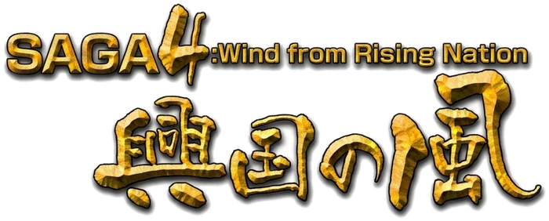</figure></div><div class="sagatext"><p>An isolated island to the west, "Morg."</p><p>In a world where underground resources have been depleted, it is the only nation that possesses coal mines. Having carved its history long ago as an allied city of Iron South, it is a young nation that only recently declared its independence. Its people still toil in the dirt just as they have for generations, extracting resources that serve as both their daily sustenance and the foundation of their national strength.</p><p>While the nation is spirited as a rising power, the expressions of the people living there are somewhat complex, their faces showing a mix of anticipation for their growing momentum and anxiety over their rapidly changing daily lives.</p><p>Standing further to the southwest is the Light Tower, a grand legacy holding the mysteries of the collapsed "Machine" civilization.</p><p>"Morg," the fourth nation vying for world supremacy. Those who set foot upon its soil are adventurers who have acquired new skills.</p><p>Now that all the nations supporting the continent of Acronia have been opened, what kind of adventures await them? From this land of hope and turmoil, a new wind begins to rise.</p><details class="sagajp"><summary>Original Japanese</summary><p lang="ja">西の孤島、「モーグ」。<br>地下資源が枯渇したこの世界で炭鉱を持つ唯一の国。<br>古くはアイアンサウスの連合都市として歴史を刻み、近年独立を宣言した新しい国で、人々は昔ながらに土にまみれて資源を生み出し、日々の糧、そして国力の礎としています。<br>新興国として気炎を吐く一方、そこに住まう人々の表情はどこか複雑で、その面持ちには、立ち上る気運への期待と、激変する日々への不安が入り混じっています。<br>さらに南西にたたずむのは光の搭。<br>崩壊した「キカイ」文明の謎を秘めた大いなる遺産です。<br>世界の覇権を争う四番目の国、「モーグ」。<br>その地に踏み込むのは、新たな技能を得た冒険者達です。<br>アクロニア大陸を担うすべての国が開かれた今、彼らを迎えるのはどんな冒険でしょうか？<br>希望と混迷の地から、新たな風が舞い上がります。</p></details></div></details>
<details class="sagacard" id="saga-5"><summary><h3 id="saga-5-island-of-creation-and-craft">SAGA 5: Island of Creation and Craft</h3></summary><div class="sagamedia cover"><figure class="art">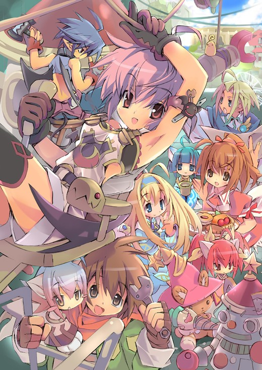</figure><div class="sagabanners"><figure class="art">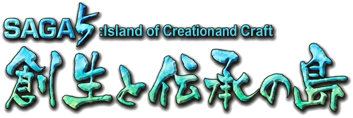</figure></div></div><div class="sagatext"><p>Surrounded by blue seas lies "Tonka."</p><p>Floating off the eastern coast of Iron South to the southeast of the continent of Acronia, this isolated island can only be reached by Flying Garden. Since ancient times, craftsmanship has flourished here, giving rise to unique technologies found nowhere else in the world.</p><p>The artistry of Marionettists, who breathe souls into tangible forms to grant them life...</p><p>The skill of Machinery, who reshape and assemble mere metallic matter to create "Machines"...</p><p>And the world's only technology capable of building and upgrading Flying Gardens...</p><p>Like Morg, this island shares a long history as an allied city of Iron South. However, as if following in Morg's footsteps, momentum for independence has been rising, causing relations with Iron South to grow tense. To protect the island's interests, "Dolls," a marionette army composed of trained marionettes and the soldiers who control and command them, is also being reinforced, steadily heightening political unrest.</p><p>And now, an unprecedented threat disturbs the rippling blue waves and the tranquil blue skies...</p><p>What kind of encounters will this island of creation and lore bring to adventurers?</p><details class="sagajp"><summary>Original Japanese</summary><p lang="ja">青い海に囲まれた「トンカ」。<br>アクロニア大陸の南東、アイアンサウスの東の沖合いに浮かび、飛空庭でしかたどりつけないこの孤島では、古来より“ものづくり”が盛んに行われ、他の地域に見られない特殊な技術が発達しています。<br>形あるものに魂を吹き込み、生命を与えるマリオネストたちの技巧……。<br>ただの金属物質を作り変え、組み上げ、「キカイ」を生み出すマシンナリーたちの技能……。<br>そして、飛空庭を作り出し、改良していくことのできる、世界で唯一の技術……。<br>モーグと同じく、古くからアイアンサウスの連合都市として歴史を共にしてきたこの島ですが、モーグに続くかのように独立の気運が高まっており、アイアンサウスとの仲は険悪になってきています。島の利益を守るため、訓練されたマリオネットとそれを操り、指揮する兵士で編成されたマリオネット軍「ドールズ」も増強され、政情不安が徐々に高まりつつあります。<br>そして、さざめく青い波、穏やかな青い空を乱す、これまでにない脅威……。<br>創生と伝承の島は、冒険者たちにどんな出会いをもたらすのでしょうか。</p></details></div></details>
<details class="sagacard" id="saga-6"><summary><h3 id="saga-6-door-of-neogenesis">SAGA 6: Door of Neogenesis</h3></summary><div class="sagamedia cover"><figure class="art">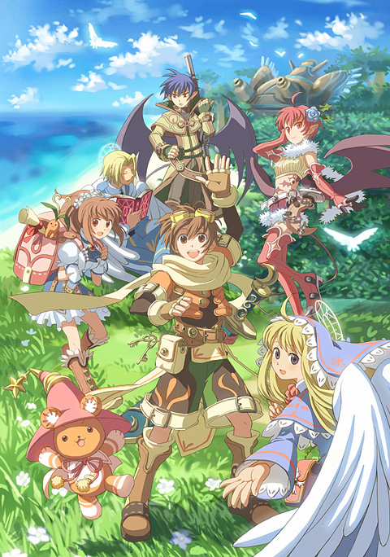</figure><div class="sagabanners"><figure class="art">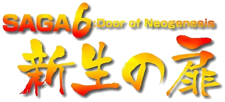</figure></div></div><div class="sagatext"><p>Far to the east-southeast of the continent of Acronia, floating in the distant seas, lies the island of "Mai Mai."</p><p>Deep within the jungles of this island, where giant baobab trees stand in abundance, the "Mai Mai Ruins" still tower in silence today.</p><p>In recent years, after the baobab trees on the continent, a vital material for Flying Gardens, were completely logged out, people searched other regions for supplies and discovered Mai Mai Island and its ruins. Boasting an overwhelming presence, the ruins eventually became an object of worship, and pilgrims traveling to the island even established a permanent camp village surrounding the site.</p><p>Yet, amidst the deep green of the jungle, that massive, beetle-like structure gleams dully with a mysterious material reminiscent of ceramic or titanium. Looking as though it could take flight at any moment, is it truly just a ruin?</p><p>The Guild Council has decided to dispatch a ruins investigation team...</p><p>Countless adventurers have also begun turning their attention toward the Mai Mai Ruins.</p><p>Now, something historic is about to begin.</p><details class="sagajp"><summary>Original Japanese</summary><p lang="ja">アクロニア大陸よりはるか東南東、絶海に浮かぶ島「マイマイ」。<br>バオバブの巨木が立ち並ぶその島の密林の中に、「マイマイ遺跡」は今も静かにそびえ立っています。<br>近年、飛空庭の重要な材料であるバオバブの木が大陸で伐採しつくされ、人々が他の地域に素材を求めた時、マイマイ島とその遺跡は発見されました。<br>圧倒的な存在感を誇るその遺跡はいつしか信仰の対象となり、島を目指す巡礼者たちは、遺跡の周囲にキャンプ村を常設するまでになりました。<br>しかし、密林の濃い緑の中、セラミックやチタンを思わせる謎の材質を鈍く輝かせる、巨大な甲虫のようなソレ。<br>今にも飛び立ちそうなソレは、本当にただの遺跡なのでしょうか？<br>ギルド評議会は遺跡調査隊の派遣を決定……。<br>多くの冒険者たちもマイマイ遺跡に注目し始めました。<br>今、歴史的な何かが始まろうとしています。</p></details></div></details>
<details class="sagacard" id="saga-7"><summary><h3 id="saga-7-faraway-to-waterlayer">SAGA 7: Faraway to Waterlayer</h3></summary><div class="sagamedia cover"><figure class="art">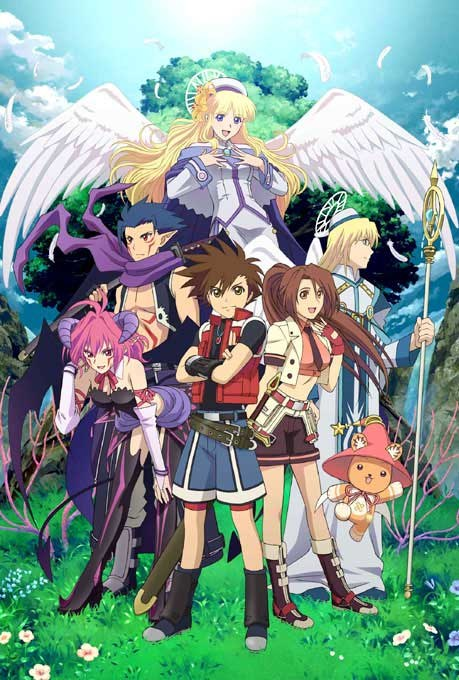</figure><div class="sagabanners"><figure class="art">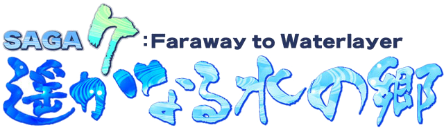</figure></div></div><div class="sagatext"><p>Adventurers who reached the deepest depths of the Mai Mai Ruins discovered something unexpected there.</p><p>It is something that weaves the path to the next journey...</p><p>Something that opens the door to a distant, alternate dimension.</p><p>At last, the adventure leaps beyond the Emil world, expanding into the celestial realm, the world of Titania.</p><p>Across the dimensional divide lies the distant land of water, "Waterlayer"...</p><p>A realm cradling a massive World Tree, overflowing with lush flora and water. What mysteries lie dormant in this place tended by mermaids?</p><p>Furthermore, there is the existence of a dungeon opening up within Waterlayer, leading deep beneath the water... What secrets are hidden inside this cavern, where fish sometimes frolic and monsters sometimes writhe?</p><p>Pointing the way forward is a tower said to reach the heavens, along with the key discovered within the Mai Mai Ruins.</p><p>Beyond the boundaries between worlds, brand-new adventures lie in wait.</p><details class="sagajp"><summary>Original Japanese</summary><p lang="ja">マイマイ遺跡の最深部に達した冒険者は、そこで思わぬ物を見出しました。<br>それは次の旅路をつむぐ物……<br>遠く異次元への扉を開く物です。<br>冒険はついにエミルの世界を飛び出し、天界、タイタニアの世界へと広がります。<br>次元を隔て、たどりつくのは遥かなる水の郷、「ウォーターレイアー」……<br>巨大な世界樹を抱き、草木と水に溢れる土地。<br>人魚たちが営むこの場所には<br>どんな神秘が眠っているのでしょうか？<br>さらに、ウォーターレイアーに口を開けた水中深くへと続くダンジョンの存在……。<br>時に魚たちがたわむれ、時にモンスターたちがうごめくこの洞窟にはどんな秘密が隠されているのでしょうか？<br>道を指し示すのは、天まで続くと言われる塔。<br>そして、マイマイ遺跡で見出された鍵です。<br>世界の壁を越えた先に、新たな冒険が待ち構えています。</p></details></div></details>
<details class="sagacard" id="saga-8"><summary><h3 id="saga-8-song-for-battle-field">SAGA 8: Song for Battle Field</h3></summary><div class="sagamedia cover"><figure class="art">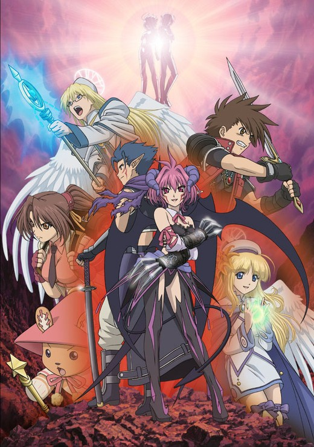</figure><div class="sagabanners"><figure class="art">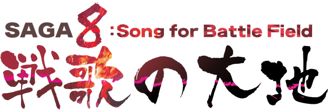</figure></div></div><div class="sagatext"><p>The "Dominion World"... Also known as the Underworld, this place is the motherland of the Dominions, a people overflowing with fighting spirit who wander the Three Realms in search of power.</p><p>Existing across distant dimensions from the worlds of Emil and Titania, this realm has been invaded by the overwhelmingly powerful machine race, the "DEM," who continue to encroach upon the very land itself.</p><p>"Dimensional Reincarnation," transcending dimensions to shape a new cycle of rebirth...</p><p>An unfamiliar land, or a homeland transformed beyond recognition...</p><p>A journey echoing with roars of fury, and brand-new monsters...</p><p>What is the true reason the Dominions seek power?</p><p>The final bastion, "Westfort"...</p><p>The proud members of the Resistance...</p><p>And the looming threat of the dimensional invaders, the "DEM"...</p><p>What is the ultimate goal of these heartless invaders, the machine race "DEM"?</p><p>Having reached their hour of trial, adventurers now set foot upon this land of fervent war songs.</p><details class="sagajp"><summary>Original Japanese</summary><p lang="ja">「ドミニオン世界」……冥界とも呼ばれるその場所は、闘争本能に満ち溢れ、<br>力を求めて三界をさまようドミニオンたちの母なる故郷です。<br>エミル、タイタニアの世界から遥か次元を隔てたところに存在するその世界は、<br>圧倒的な力を持つ機械族「DEM」によって侵略され、大地そのものすら侵食され続けています。<br>次元を超え、新たな輪廻を形作る「次元転生」……<br>見知らぬ大地、あるいは変わり果てた故郷……<br>怒号鳴り響く旅路、新たなモンスター……<br>ドミニオンたちが力を求める真の理由はいったい何なのでしょうか？<br>最後の砦「ウェストフォート」……<br>誇り高きレジスタンスたち……<br>そして、迫り来る次元侵略者「DEM」の脅威……<br>心無き侵略者、機械族「DEM」の狙いとは？<br>試練の時を迎えた冒険者たちが熱き戦歌の大地に今、降り立ちます。</p></details></div></details>
<details class="sagacard" id="saga-9"><summary><h3 id="saga-9-eternal-paradise">SAGA 9: Eternal Paradise</h3></summary><div class="sagamedia cover"><figure class="art">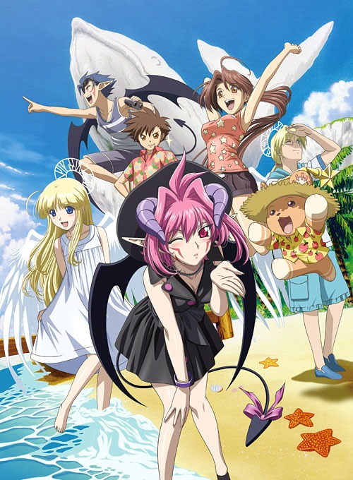</figure><div class="sagabanners"><figure class="art">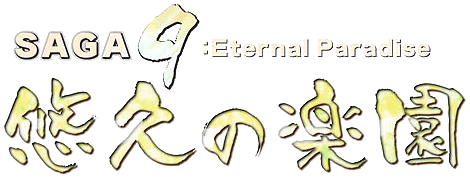</figure></div></div><div class="sagatext"><p>Far removed from the bustle of the mundane world lies the dreaming metropolis of "ECO Town."</p><p>Located within the Titania world, yet at the same time not existing within it, this city of unknown whereabouts is a place where people forget all conflict and live in pure enjoyment.</p><p>Brilliant sunlight shining down, white sandy beaches baked warm. Hot springs sending up soothing steam, and lively arcades bustling with energy. This is a world free of strife, unlike anything ever seen before.</p><p>Whether to find a fleeting moment of peace, or to seek out a future for the Dominion world, adventurers cross the rainbow bridge and set foot into this dreaming metropolis.</p><p>What exactly is "ECO Town"?</p><p>What is the mystery lurking within the towering Whale Rock?</p><p>Many mysteries lie hidden within ECO Town, and beyond it, countless incidents are also being set into motion across many different places.</p><p>Across the three worlds of Titania, Emil, and Dominion, adventurers begin walking their own separate paths, believing that one day, those paths will cross once again.</p><details class="sagajp"><summary>Original Japanese</summary><p lang="ja">俗世の喧騒から離れた、夢見る都「ECOタウン」<br>タイタニア世界にありながら、同時にタイタニア世界に存在しない、どこにあるとも知らぬこの都市で、<br>人々は争いを忘れ、楽しみと共に暮らしています。<br>さんさんと照りつける陽光、熱く焼けた白い砂浜。暖かな湯気をたてる温泉、活気にあふれる遊技場。<br>ここは、今までに見た事もなかった争いのない世界。<br>ひと時の安らぎを得るために、あるいは、ドミニオン世界の未来を求め、<br>冒険者達は虹の橋を超えて、この夢見る都へと降り立ちます。<br>「ECOタウン」とは、一体なんなのか？<br>高くそびえるくじら岩に潜む謎とは、一体何か？<br>ECOタウンに潜む謎は多く、それ以外にも、いくつもの場所で、いくつもの事件が動き出します。<br>タイタニア、エミル、ドミニオンの三つの世界で、冒険者達は、それぞれの道を進みはじめます。<br>いつか、その道が再び交わる事を信じて。</p></details></div></details>
<details class="sagacard" id="saga-10"><summary><h3 id="saga-10-pseudo-gods-and-memory-of-machines">SAGA 10: Pseudo Gods and Memory of Machines</h3></summary><div class="sagamedia cover"><figure class="art">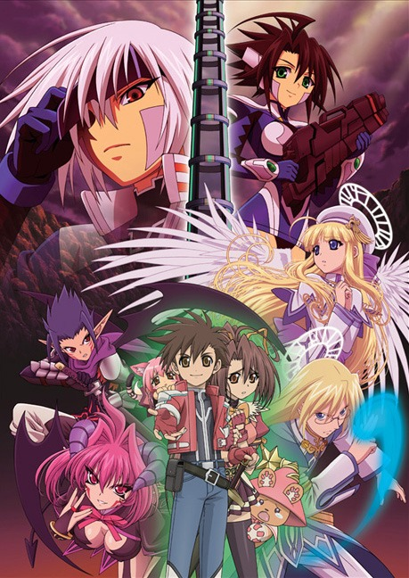</figure><div class="sagabanners"><figure class="art">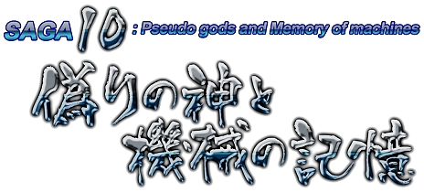</figure></div></div><div class="sagatext"><p>The small ripples created by the adventurers have, before anyone realized, grown into a massive surge across the three worlds.</p><p>At last, the Resistance's counteroffensive begins.</p><p>A secretly constructed underground passage leading to Acropolis. Within its multi-layered labyrinth, unknown and formidable foes lie in wait. From earth to stone, and from stone to corridors of metal... Step by step, as adventurers draw closer to the center, a colossal shadow blocks their path.</p><p>Meanwhile, in a corner of Acropolis City in the Dominion world, a quiet yet monumental incident is unfolding.</p><p>Born in the plants of Acropolis, the heartless invaders: the machine race, DEM. Among them has appeared one who possesses a "heart" they were never meant to have, defecting from the DEM ranks.</p><p>A tiny, tiny defective unit mixed in among precision machinery. To a vast ocean like "war," it may seem like nothing more than an insignificant pebble. Yet, we must not forget: a small pebble dropped onto the water's surface can one day create massive ripples.</p><p>A faint sign of reconciliation emerging amidst the war. Within this vortex of hatred, will there be anyone willing to reach out a hand?</p><details class="sagajp"><summary>Original Japanese</summary><p lang="ja">冒険者たちによって生み出された小さな波は、<br>三つの世界で、いつしか大きなうねりとなって動き出しました。<br>ついにレジスタンスの反抗作戦が始まります。<br>秘密裏に通された、アクロポリスへ通じる地下通路。<br>多層にわたる迷路には未知の強敵が待ち構えています。<br>土から石へ、そして石から金属の通路へ。<br>一歩一歩中心に近づいていく冒険者たちの前に、巨大な影が立ちふさがります。<br>一方、ドミニオン世界のアクロポリスシティの片隅で、ひっそりと、しかし大きな事件がおきています。<br>アクロポリスのプラントにて産み落とされた、心持たぬ侵略者。機械種族ＤＥＭ。<br>その中で、本来持ち得ないはずの「心」を持ち、ＤＥＭの中から離反した存在が出現したのです。<br>精密機械の中に混じった、小さな小さな不良品。<br>それは、「戦争」という大きな海にとっては、取るに足らない石ころのようなものかもしれません。<br>しかし、忘れてはいけません。水面に落ちた小石が、いつか大きな波紋を生むこともあるのです。<br>戦争の中に現れた小さな融和の兆し。憎しみの渦の中、手を差し伸べる者は居るのでしょうか？</p></details></div></details>
<details class="sagacard" id="saga-11"><summary><h3 id="saga-11-time-to-rouse">SAGA 11: Time to Rouse</h3></summary><div class="sagamedia cover"><figure class="art">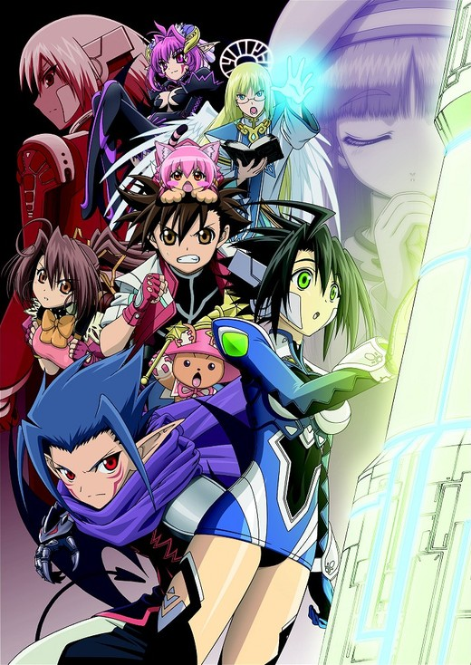</figure><div class="sagabanners"><figure class="art">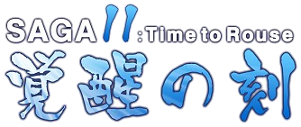</figure></div></div><div class="sagatext"><p>Welcoming the DEM who have gained a "heart" as allies, the adventurers' journey heads toward a brand-new land.</p><p>It lies even further beyond the water village of Waterlayer, a land where all other races are forbidden from setting foot: the azure sanctuary, the "Titania World"... What will they witness there, and whom will they meet?</p><p>Meanwhile, in the far northern reaches of the Emil world, the three races of Emil, Titania, and Dominion encounter guidance leading toward even greater power. The path to "Superior Reincarnation," which transforms one's very being into a higher existence. When they reach this new horizon, what will the adventurers come to know?</p><p>And then, a repository of knowledge opened within the rift between dimensions. The colossal archive, "Ancient Ark," is about to reveal itself.</p><p>The three worlds have opened before the adventurers, and countless new paths stretch out ahead. Now, the hour of awakening is drawing near.</p><details class="sagajp"><summary>Original Japanese</summary><p lang="ja">「心」を得たＤＥＭたちを仲間として迎え、冒険者たちの旅路は新たなる土地へと向かいます。<br>それは、水の郷ウォーターレイアーのさらに彼方、異種族はすべて立ち入ることを禁じられた土地、<br>蒼き聖域「タイタニア世界」……。<br>彼らはそこで何を目にし、誰と会うのでしょうか？<br>一方でエミル、タイタニア、ドミニオンの三種族は、エミル世界の極北の地で、さらなる力への導きと出会います。<br>己を今よりも上位の存在へと変える「上位転生」への道。<br>新しい地平に辿り着いたとき、冒険者たちは何を知るのでしょうか？<br>そして、次元の狭間に開かれた知識の集積地。<br>巨大書庫「エンシェントアーク」がその姿を現そうとしています。<br>三つの世界は冒険者たちの前に開かれ、いくつもの新しい道が広がっています。<br>今、覚醒の刻が近づいてきているのです。</p></details></div></details>
<details class="sagacard" id="saga-12"><summary><h3 id="saga-12-reviving-pulse-and-guardian-of-heaven">SAGA 12: Reviving Pulse and Guardian of Heaven</h3></summary><div class="sagamedia cover"><figure class="art">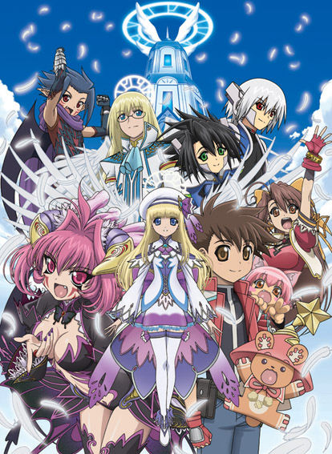</figure><div class="sagabanners"><figure class="art">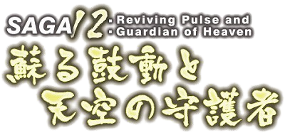</figure></div></div><div class="sagatext"><p>The adventures in the Titania world, which began amidst turmoil, have brought a single resolution to the adventurers: to rescue their precious "comrade."</p><p>Through the guidance of a dragon, a brand-new path is revealed. A search expedition to save their lost friend, marking the start of an adventure spanning all three worlds.</p><p>Strength opens steep and perilous paths, knowledge unravels difficult mysteries, and the "bonds with comrades" cultivated through adventure, more irreplaceable than anything else, eventually lead the adventurers toward the grand "Flying Castle"...</p><p>Making full use of strength, knowledge, and bonds, will they succeed in reaching the great, lost castle in the sky? And will the girl lost back then truly achieve her rebirth?</p><p>The reviving heartbeat brings a new pulse to the world, continuing to weave a new tale under the name of the Guardian of the Heavens.</p><details class="sagajp"><summary>Original Japanese</summary><p lang="ja">波乱と共に始まったタイタニア世界での冒険は、冒険者たちにひとつの決意をもたらします。<br>それは、大切な「仲間」を助け出す事。<br>龍の導きにより、新たなる道が示されます。<br>失われた仲間を助け出すための探索行。<br>三つの世界を股にかけた冒険が始まるのです。<br>力は険しい道を開き、知識は困難な謎を解き明かし、冒険で培った、何より得難い「仲間との絆」は、 やがて大いなる「飛空城」へと冒険者を導く……。<br>力と知識と絆を駆使し、彼らは見事、失われた大いなる空の城にたどり着くことができるのか。<br>そして、あの時失われた少女は、見事再誕を果たすことができるのでしょうか？<br>蘇る鼓動は、世界に新たな脈動をもたらし、天空の守護者の名の下、新たな筋書きを描き続けます。</p></details></div></details>
<details class="sagacard" id="saga-13"><summary><h3 id="saga-13-lands-for-groundbreaker">SAGA 13: Lands for Groundbreaker</h3></summary><div class="sagamedia cover"><figure class="art">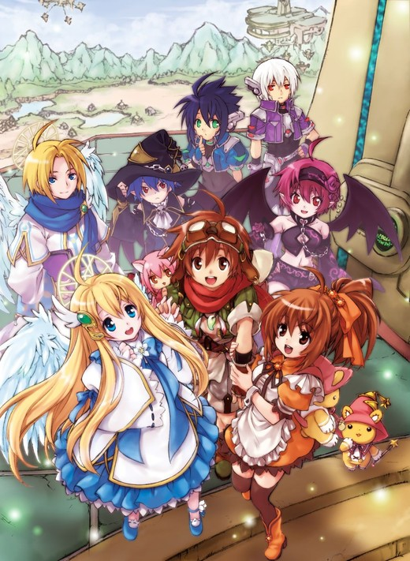</figure><div class="sagabanners"><figure class="art">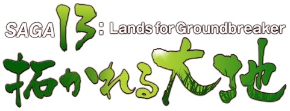</figure></div></div><div class="sagatext"><p>The lost wings have been reclaimed, and a brief moment of peace has arrived.</p><p>A tranquil time flows by, spent repairing and maintaining the Flying Castle, or exploring lands never visited before.</p><p>It was then that the Titania Dragon pointed toward a secret hidden from the world, lying dormant in a lost land: "ECO Town," the city vanished from the Titania world.</p><p>Something that neither the barriers between worlds nor the chasms between dimensions can sever. The rainbow-colored thread connecting a path that does not exist... that is the bond between people.</p><p>Following that thread of bonds leads to an unexpected reunion. Sitting deep within the recesses of Whale Rock is the Emil Dragon. What is the secret that he holds?</p><p>...And when that secret is revealed, will things ever be able to remain the same as before?</p><p>The past and the future slowly intersect, and upon the newly opened land, dawn is about to break.</p><details class="sagajp"><summary>Original Japanese</summary><p lang="ja">失われた翼は取り戻され、一時の平穏が訪れました。<br>飛空城の修理やメンテナンスを行ったり、今まで行っていなかった土地を巡ってみたりと、穏やかな時間が流れていきます。<br>そんな時、タイタニアドラゴンが指し示したのは失われた土地に眠る、世界に隠された秘密。<br>タイタニア世界から失われた都「ＥＣＯタウン」。<br>世界の壁も、次元の溝も、断ち切ることの出来ぬもの。<br>存在しない道をつなぐ虹色の糸、それは人の絆。<br>絆の糸をたぐり寄せた先に、意外な再開が訪れます。<br>くじら岩の深奥に座すエミルドラゴン。<br>彼が抱えた秘密とは、何なのか。<br>……そして、それを知ったとき。<br>今まで通りでいることはできるのでしょうか？<br>今までとこれからが、ゆっくりと交差していき、拓かれた大地に、夜明けが訪れようとしています。</p></details></div></details>
<details class="sagacard" id="saga-14"><summary><h3 id="saga-14-gate-of-emerald-forest">SAGA 14: Gate of Emerald Forest</h3></summary><div class="sagamedia cover"><figure class="art">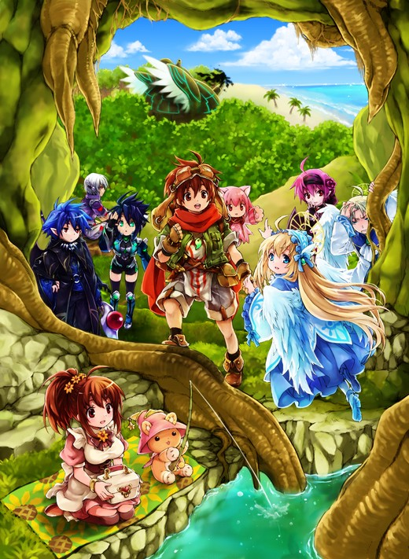</figure><div class="sagabanners"><figure class="art">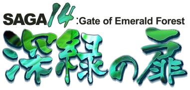</figure></div></div><div class="sagatext"><p>The path to the Mai Mai Hinterlands, long concealed behind a veil of mystery, has finally opened.</p><p>Those seeking unseen treasures and glory, and those driven by ambition or a spirit of adventure... Carrying their own varied desires, adventurers step into this uncharted territory. Among these adventurers is a single girl who has awakened from a long slumber, standing alongside newly met traveling companions, and alongside you, with whom she has been reunited.</p><p>Meanwhile, far removed from the adventures in Mai Mai, a small event has taken place in the Frontier Village. Brought in by people who carried out long, steady negotiations with the Insmouse, the culture of fishing is about to blossom across Acronia.</p><p>On a distant island, and in a nearby village, brand-new adventures are beginning to stir. What kind of scenery stretches out beyond that door of deep green?</p><details class="sagajp"><summary>Original Japanese</summary><p lang="ja">神秘のヴェールに隠されていた、マイマイ奥地への道が開かれました。<br>まだ見ぬ財宝や名誉を求める者、冒険心や野心で動く者、<br>様々な思いを秘めた冒険者達は未知の領域に足を踏み入れていきます。<br>そんな冒険者達の中に、長い眠りから目覚めた一人の少女がいます。<br>新しく出会った旅の仲間と、再び出会えたあなたと共に。<br>一方、遠くマイマイでの冒険とは別に、開拓村で小さな事件がありました。<br>インスマウスたちと長く地道な交渉を続けた人達がもちこんだ、<br>釣りという文化がこのアクロニアに花開こうとしているのです。<br>遠くの島で、近くの村で、新しい冒険が始まりだしています。<br>深緑の扉の向こうには、どんな景色が広がるのでしょうか。</p></details></div></details>
<details class="sagacard" id="saga-15"><summary><h3 id="saga-15-everlasting-union">SAGA 15: Everlasting Union</h3></summary><div class="sagamedia cover"><figure class="art">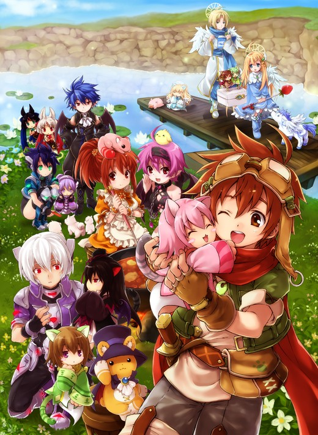</figure><div class="sagabanners"><figure class="art">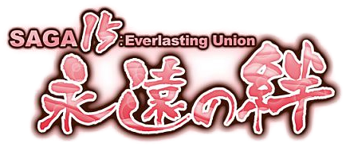</figure></div></div><div class="sagatext"><p>To the north of the Acronia Western Plains, a long-sealed path has finally opened.</p><p>Once blocked by landslides, the road has been cleared once more, and a new wave of pioneering is about to begin.</p><p>At the same time, a strange reunion visits the adventurers. An adventure beginning with a reunion serves as the overture to new encounters. What is newly discovered is the bond shared with companions who have been at their side all along.</p><p>A dark shadow that controls the hearts of others to reclaim its lost power.</p><p>A young man pursuing that dark shadow to find what is precious to him.</p><p>As they become entangled in these events, the adventurers discover "it": a synergy with reliable comrades who understand one another not just through words, but soul-to-soul, achieved by drawing their souls closer together and keeping the ties between their hearts strong.</p><p>An eternal bond is now being passed down to the adventurers.</p><details class="sagajp"><summary>Original Japanese</summary><p lang="ja">西アクロニア平原の北、閉ざされていた道が開かれました。<br>土砂によって閉じた道は再び切り開かれ、新しい開拓が始まろうとしています。<br>同時期に、冒険者のもとに奇妙な再会が訪れます。<br>再会から始まる冒険は、新しい出会いへの序曲。<br>新たに見出されるものは、今まで共にあった仲間との絆。<br>力を取り戻すため、他人の心を支配する黒い影。<br>大切なものを見つけ出すため、黒い影を追う青年。<br>事件に巻き込まれる中で、冒険者は「それ」を見つけ出します。<br>魂と魂をより近づけ、心の結びつきを強く保つことで、言葉だけではなく、魂で分かり合う頼れる仲間との連携。<br>永遠の絆が、冒険者たちに伝わっていくのです。</p></details></div></details>
<details class="sagacard" id="saga-16"><summary><h3 id="saga-16-memories-of-the-ice-queen">SAGA 16: Memories of the Ice Queen</h3></summary><div class="sagamedia cover"><figure class="art">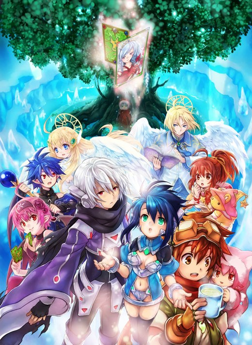</figure><div class="sagabanners"><figure class="art">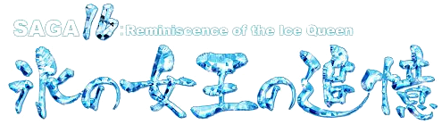</figure></div></div><div class="sagatext"><p>A long, long time has passed.</p><p>Perhaps people had almost forgotten about it.</p><p>Lost records. Untold history.</p><p>...The northern kingdom of Northern, sealed away beneath ice and snow.</p><p>Those who step into the sealed, forbidden territory are the ones who know nothing of it.</p><p>The hidden sanctuary, the Underground District of the Northern Kingdom.</p><p>The shadowless people simply continue to wait for the return of their Queen, within the gentle passage of shifting time.</p><p>A lost Queen. A kingdom of magic that vanished.</p><p>Fragments of longing reach all the way to the distant land of abundance, arriving in the depths of a dark castle where no light shines, to the one who has bound themselves there, waiting endlessly.</p><p>Somewhere, the Ice Queen quietly loses herself in thought.</p><p>The people continue to wait, as if sleeping within the ice, for the arrival of a stranger who will shatter this eternal stagnation.</p><details class="sagajp"><summary>Original Japanese</summary><p lang="ja">長い、長い時間が流れた。<br>人々はそのことを忘れかけていたのかもしれない。<br>失われた記録。語られることのない歴史。<br>……氷雪の下に閉ざされし、北の王国ノーザン。<br>封じられた禁域に踏み込むのは、それを知らぬ者。<br>秘められた聖域、ノーザン王国地下市街地。<br>影無き人々は、ただ女王の帰還を待ち続ける。<br>穏やかに、移ろいゆく時間の中で。<br>失われた女王。消えてしまった魔法王国。<br>想いの欠片は、遠く豊穣の国にまで届く。<br>光も射し込まない闇の城の奥で、<br>己を縛り付け、待ち続けていた人のもとへ。<br>氷の女王は、どこかで静かに物思う。<br>人々は、氷の中で眠るように待ち続ける。<br>永遠の停滞を打ち破る、知らない誰かの到来を。</p></details></div></details>
<details class="sagacard" id="saga-17"><summary><h3 id="saga-17-the-ancient-seal-and-the-eternal-keep">SAGA 17: The Ancient Seal and the Eternal Keep</h3></summary><div class="sagamedia cover"><figure class="art">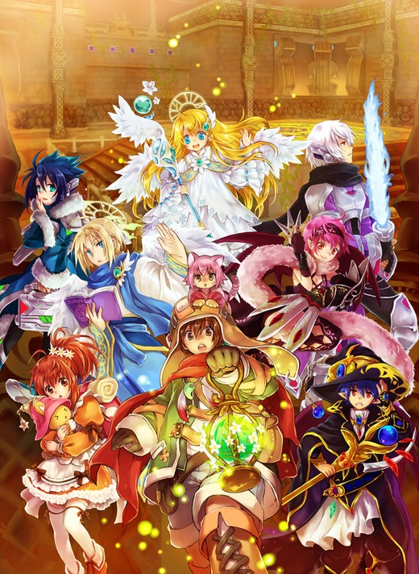</figure><div class="sagabanners"><figure class="art">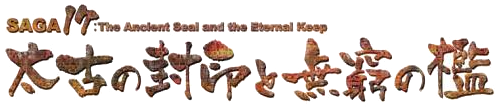</figure></div></div><div class="sagatext"><p>A mystery that has existed since the distant, ancient past.</p><p>A secret of the world that existed even before the ancient races arrived.</p><p>A sealed world that envelops and continues to protect the world.</p><p>At the end of a long passage of time, the mighty seal eventually begins to fray. Even on the hidden, impenetrable outer wall, a tiny crack forms. And even the smallest of flaws will inevitably be discovered one day.</p><p>Found in the deepest depths of the Endless Corridor is a passage leading even further inward. Only a tiny handful of the Reborn are able to press onward beyond it.</p><p>Driven by curiosity and a thirst for inquiry, carrying an innocent spirit of adventure, the adventurers step forward to the other side of the seal.</p><p>What awaits the adventurers is an endless trial.</p><p>What lies ahead is scenery never seen before.</p><p>A brand-new challenge to brave the Cage of Eternity now begins.</p><details class="sagajp"><summary>Original Japanese</summary><p lang="ja">それは、はるか太古より存在した神秘。<br>古代種族が訪れる、それ以前から存在した、世界の秘密。<br>世界を覆い、守り続ける、封印された世界。<br>長い時間の果てに、強固な封印はいつしかほつれる。<br>秘められていた強固な外壁にも、小さな亀裂が生まれる。<br>ほんの小さな傷ですら、いつかは発見される。<br>無限回廊の最深部にて発見された、さらに奥への通路。<br>その先に進めるのは、ごく一握りの転生者。<br>好奇心と探究心に突き動かされ、無邪気な冒険心とともに<br>冒険者たちは封印の向こう側に進んでいく。<br>冒険者を待ち受けるのは、果てなき挑戦。<br>その先にあるものは、まだ見たこともない風景。<br>無窮の檻へと挑む、新しい挑戦が始まります。</p></details></div></details>
<details class="sagacard" id="saga-18"><summary><h3 id="saga-18-rust-on-mirage">SAGA 18: Rust on Mirage</h3></summary><div class="sagamedia cover"><figure class="art">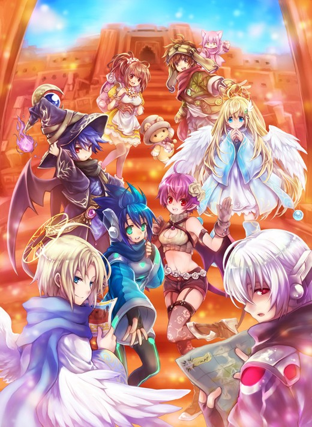</figure><div class="sagabanners"><figure class="art">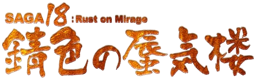</figure><figure class="art">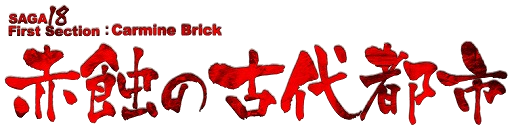</figure><figure class="art">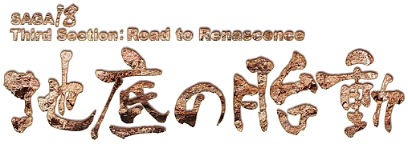</figure></div></div><div class="sagatext"><p>A single kingdom, vanished beyond the flow of time.</p><p>A kingdom of mirages, buried beneath the red sands.</p><p>A rust-colored land, discovered on the other side of the storm.</p><p>What awaits within the innermost depths of this forgotten land?</p><p>Who awaits on the other side of that mirage?</p><p>...From beyond oblivion, an unknown history awakens.</p><p>The world changes, history moves forward, and yet the days continue on, as if nothing had ever remained unchanged.</p><p>In the world of ice, and in the deepest reaches of the Cage of Eternity, forgotten memories await the hour of their awakening.</p><p>These forgotten memories of the past, sleeping endlessly...</p><p>Who, then, will be the one to awaken them?</p><details class="sagajp"><summary>Original Japanese</summary><p lang="ja">時の流れの彼方に消えた、一つの王国。<br>赤い砂の中に埋もれた、蜃気楼の王国。<br>嵐の向こう側で発見された、錆色の大地。<br>忘れ去られた大地の秘奥には、何が待つのだろう。<br>あの蜃気楼の向こうには、誰が待っているのだろう。<br>……忘却の彼方から、知られざる歴史が目を覚ます。<br>世界は変わる、歴史は進む、それでも日々は続く。<br>変わらない物など、まるで何もなかったかのように。<br>氷の世界で、無窮の檻の奥底で、<br>忘れ去られた記憶達が、目覚めの時を待っている。<br>眠り続ける、忘れ去られた過去の記憶達。<br>目覚めさせるのは、一体誰なのでしょうか？</p></details></div></details>
</div>

<h2 id="related">Related</h2>
<ul>
<li><a href="quest-tutorial.html">Tutorial Quests</a>: the lessons before the first chapter.</li>
</ul>
  </main>
  <aside class="toc" aria-labelledby="toc-h"><h2 id="toc-h">On this page</h2><ul><li><a href="#main-story-chapters">Main Story chapters</a></li><li><a href="#bonus-stories">Bonus stories</a></li><li><a href="#saga-timeline">SAGA timeline</a></li><li><a href="#saga-stories">SAGA stories</a></li><li><a href="#related">Related</a></li></ul></aside>
</div>
<script src="search-index.js"></script>
<script src="site.js"></script>
</body>
</html>
